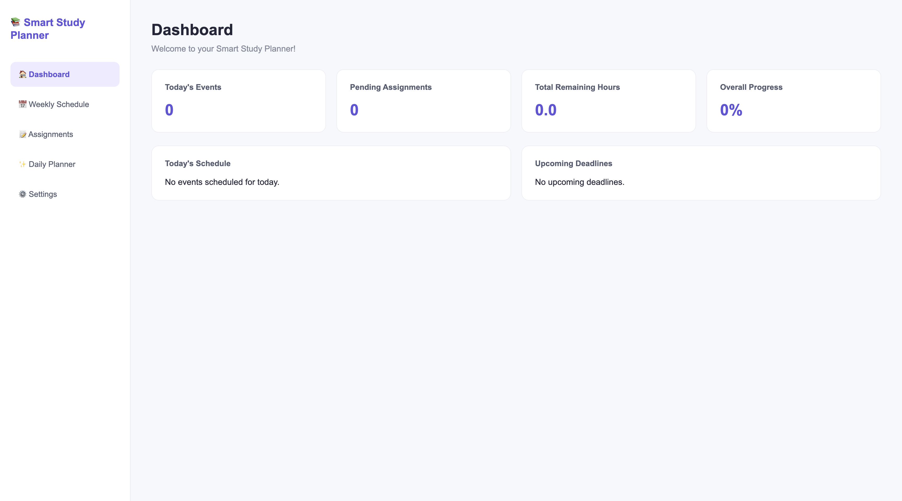
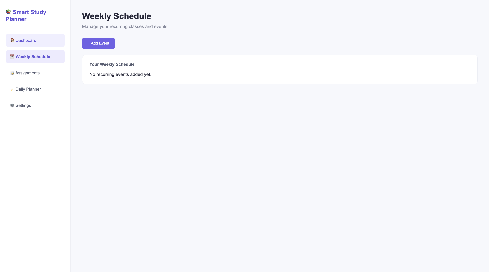
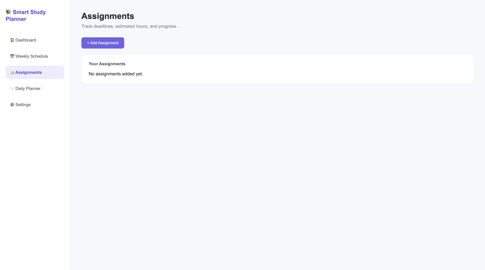
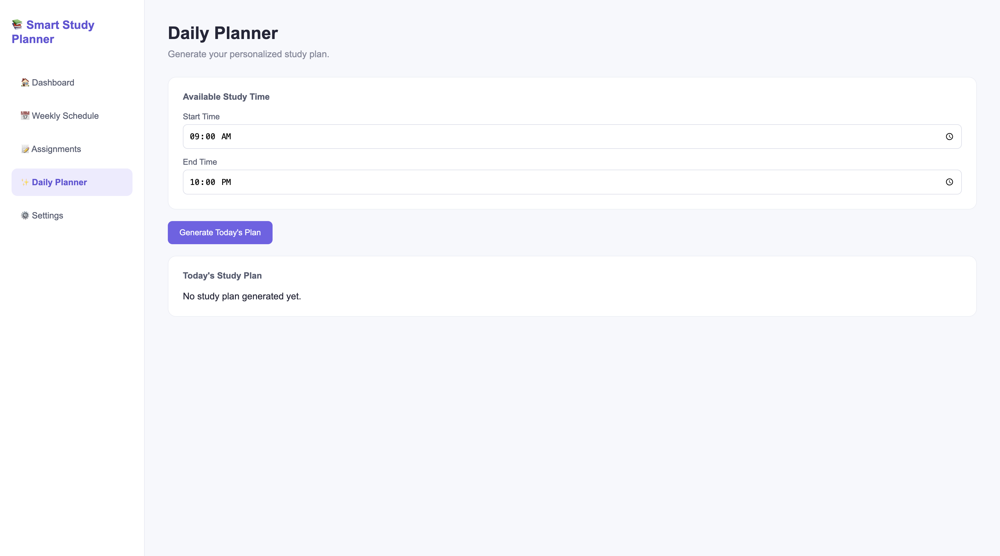
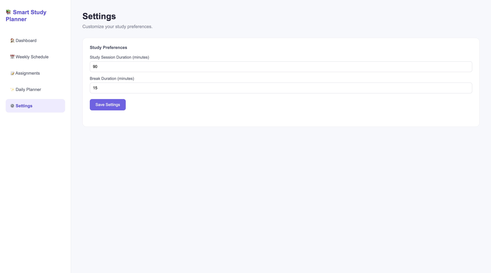

Project Overview
College students often struggle to balance classes, assignments, and independent study time.
Smart Study Planner addresses this problem by combining weekly scheduling, assignment tracking, and automatic daily study planning in one application.
Key Features
- Dashboard: View today's events, upcoming deadlines, and assignment progress.
- Weekly Schedule: Add recurring events and prevent scheduling conflicts.
- Assignments: Track deadlines, estimated work hours, and completion progress.
- Daily Planner: Generate study sessions around existing events.
- Settings: Customize study session and break durations.
How to Use
- Open the web application using the button above.
- Add recurring classes or activities in Weekly Schedule.
- Add assignments with deadlines and estimated study hours.
- Update assignment progress as you complete work.
- Open Daily Planner and select your available study hours.
- Click the Generate Plan button to create a study schedule.
- Adjust study session and break durations in Settings.
Example: Planning a Study Day
Suppose a student has the following schedule:
- Lecture: Monday, 10:00 AM – 11:00 AM
- Lab: Monday, 2:00 PM – 3:00 PM
The student also has these assignments:
- Math Homework: Due in 2 days, 3 hours remaining
- Research Paper: Due in 5 days, 6 hours remaining
- Programming Project: Due in 7 days, 4 hours remaining
The student selects 9:00 AM to 6:00 PM as their available study time. The planner identifies free periods between classes, prioritizes unfinished assignments, and generates study sessions with breaks.
For example, with 60-minute study sessions and 10-minute breaks, the planner might schedule:
- 9:00 AM – 10:00 AM: Math Homework
- 11:00 AM – 12:00 PM: Research Paper
- 12:00 PM – 12:10 PM: Break
- 12:10 PM – 1:10 PM: Research Paper
The exact plan depends on the current day, scheduled events, remaining assignment work, deadlines, and user settings.
How the Scheduling Algorithm Works
- Identify the available study window.
- Remove time occupied by recurring events.
- Calculate remaining work for incomplete assignments.
- Prioritize assignments using remaining hours and deadline proximity.
- Allocate study sessions to available time slots.
- Insert breaks based on the user's settings.
Screenshots
Dashboard

Weekly Schedule

Assignments

Daily Planner

Settings

Technologies Used
HTML, CSS, JavaScript, Browser Local Storage, and GitHub Pages.
Limitations
Data is stored locally in the browser and does not automatically sync across devices. The planner does not currently integrate with external calendars.